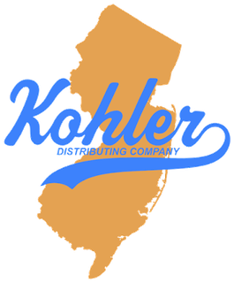

Sales rep workspace
Incentives and this month’s MPOs
Every incentive you’re in: where you stand and what you still need.
Package and liquor store programs for the month, by program.
Bar and restaurant programs for the month, by program.
What to check before a call
What’s on tap at every surveyed account, ours and theirs.
Red Bull placements against goal for the current period.
Accounts with strong Sun Cruiser and White Claw volume, and the flavor gap to pitch.